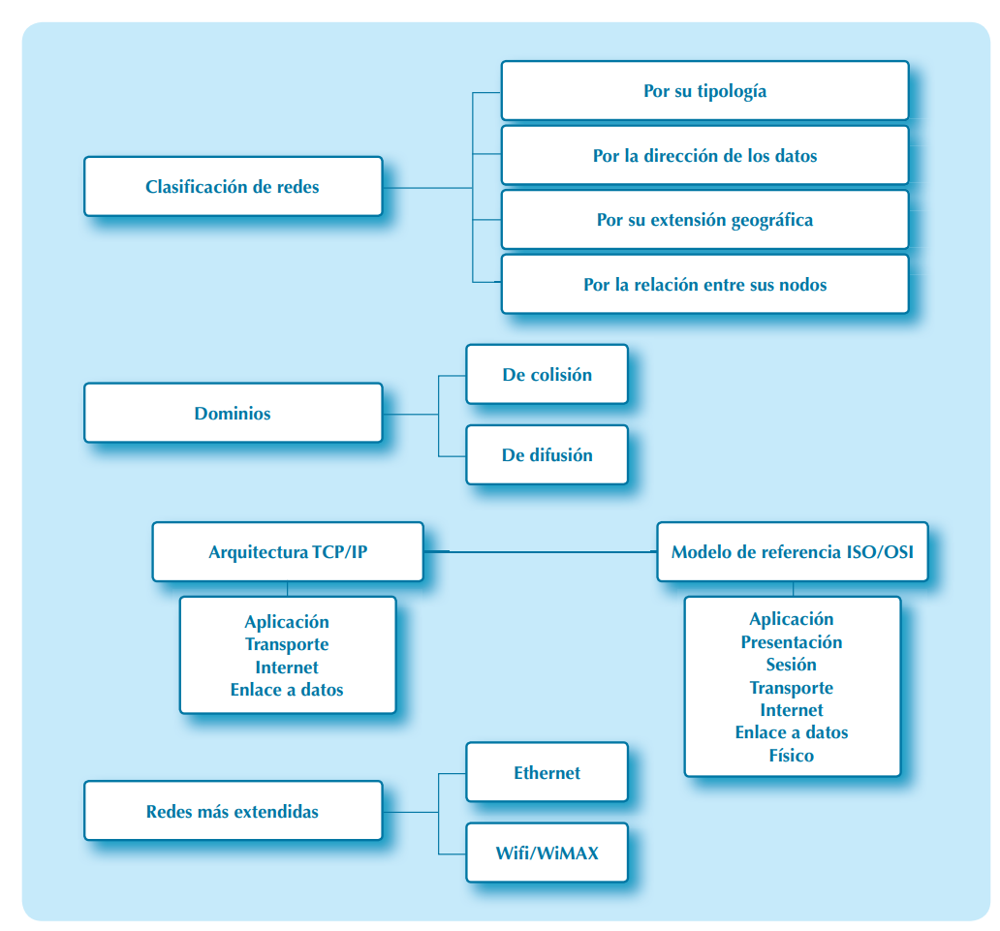

Unidad 1: Caracterización de Redes
Objetivos
- Conocer la clasificación de las redes en función de distintos criterios.
- Saber identificar los dominios de colisión y de difusión.
- Analizar las redes cableadas e inalámbricas y su evolución.
Mapa conceptual

Glosario
Glosario de términos
ARPANET: Del inglés, Advanced Research Projects Agency Network. En español, Red de la agencia de proyectos de investigación avanzada.
Broadcast: Transmisión de un paquete por parte de un nodo emisor, que tiene como destino a un conjunto de nodos receptores.
CSMA/CD: Del inglés, Carrier Sense Multiple Access with Collision Detection. En español, acceso múltiple con detección de portadora y detección de colisiones, es el protocolo utilizado en las redes Ethernet.
DoD (de EE.UU.): Departamento de Defensa de los Estados Unidos.
EIA/TIA: Del inglés, Electronic Industries Alliance/Telecommunications Industry Association, son los organismos de normalización que desarrollaron el estándar para cables de par trenzado utilizado en las redes Ethernet.
Estándar de facto: Aquel que se ha convertido en estándar por su uso masivo, sin que haya pasado por ningún proceso de normalización.
Estándar de iure: Aquel que ha sido creado por algún organismo de estandarización reconocido y legitimado para ello.
IEEE: Del inglés, Institute of Electrical and Electronics Engineers. En español, Instituto de ingenieros eléctricos y electrónicos, es un organismo de estandarización internacional sin ánimo de lucro.
ISO: Del inglés, International Organization for Standardization. Es una de las organizaciones más activas a escala mundial en la emisión de estándares de normalización.
ISP: Del inglés, Internet Service Provider. En español, proveedor de servicios de Internet. Es la empresa que ofrece servicios de Internet a los clientes.
NAP: Del inglés, Network Access Point. En español, puntos de acceso a la red. Interconecta a los ISP.
Token: Testigo software que habilita a su poseedor para realizar una operación concreta (utilizado en el protocolo Token-Ring).
1.1. Clasificación de redes
Desde la aparición, en 1969, de la red ARPANET, que supuso el punto de partida de lo que actualmente conocemos como red de redes (Internet), numerosas redes han ido surgiendo y uniéndose a esta. Este proceso ha dado lugar a una estructura compleja, conectando a miles de millones de dispositivos a través de redes más pequeñas, como redes LAN (Local Area Network) y redes WAN (Wide Area Network).
Recurso web
Tipos de redes según su topología
Las redes pueden clasificarse según su topología física o lógica:
- Redes en estrella: Todos los dispositivos están conectados a un nodo central.
- Redes en anillo: Los dispositivos forman un círculo cerrado, donde los datos viajan en una única dirección.
- Redes en malla: Cada nodo se conecta a múltiples nodos para garantizar redundancia.
1.2. Dominios de colisión y dominios de difusión (broadcast)
En redes Ethernet, un dominio de colisión es una parte de la red donde dos dispositivos pueden transmitir datos al mismo tiempo, provocando una colisión. Para reducir estos problemas, se utilizan dispositivos como switches que dividen los dominios de colisión.
Dominios de Colisión y Difusión en redes Ethernet.
Recursos adicionales: - Video: Dominios de colisión vs. dominios de broadcast.
1.3. Arquitectura de redes basadas en niveles: encapsulamiento
El encapsulamiento es un proceso crítico en redes, donde los datos reciben información adicional (encabezados) a medida que pasan por las capas de red. Esta técnica permite que los datos sean interpretados correctamente por los dispositivos finales.
Ejemplo de encapsulamiento (Modelo OSI):
- Capa de aplicación (Datos).
- Capa de transporte (Segmentos).
- Capa de red (Paquetes).
- Capa de enlace (Tramas).
- Capa física (Bits).
Recursos adicionales: - Video: Entendiendo el proceso de encapsulamiento.
1.4. El modelo de referencia OSI/ISO
El modelo OSI divide las comunicaciones en 7 capas para estandarizar los protocolos de red. Cada capa se encarga de una parte específica de la transmisión de datos.
Capas del modelo OSI:
- Física: Transmisión de bits por medios físicos.
- Enlace de datos: Corrección de errores y control de flujo.
- Red: Enrutamiento de paquetes entre redes.
- Transporte: Gestión de conexiones y transmisión confiable.
- Sesión: Control de sesiones de comunicación.
- Presentación: Traducción de datos entre sistemas.
- Aplicación: Interacción con el usuario final.
Recursos adicionales: - Guía completa del Modelo OSI en Cisco Networking Academy. - Normativa: ISO/IEC 7498-1.
1.5. La arquitectura de red TCP/IP
La arquitectura TCP/IP es el modelo base para la transmisión de datos en Internet. A diferencia del modelo OSI, TCP/IP tiene 4 capas: Acceso a la red, Internet, Transporte y Aplicación.
Recursos adicionales: - Video: Entendiendo TCP/IP.
1.6. Las redes Ethernet (IEEE 802.3)
Las redes Ethernet son las más comunes en las LAN. Utilizan cables como el par trenzado y la fibra óptica para conectar dispositivos a alta velocidad.
Par trenzado
Cables UTP y STP se utilizan en conexiones Ethernet hasta 1 Gbps.
Fibra óptica
Utilizada para conexiones a larga distancia y transmisión de datos a muy alta velocidad.
1.7. Las redes Wi-Fi (IEEE 802.11) y WiMAX (IEEE 802.16)
Wi-Fi
Basada en el estándar IEEE 802.11, Wi-Fi permite la conexión inalámbrica de dispositivos a través de un punto de acceso.
WiMAX
Protocolo inalámbrico de larga distancia utilizado para proporcionar acceso a Internet en áreas metropolitanas.